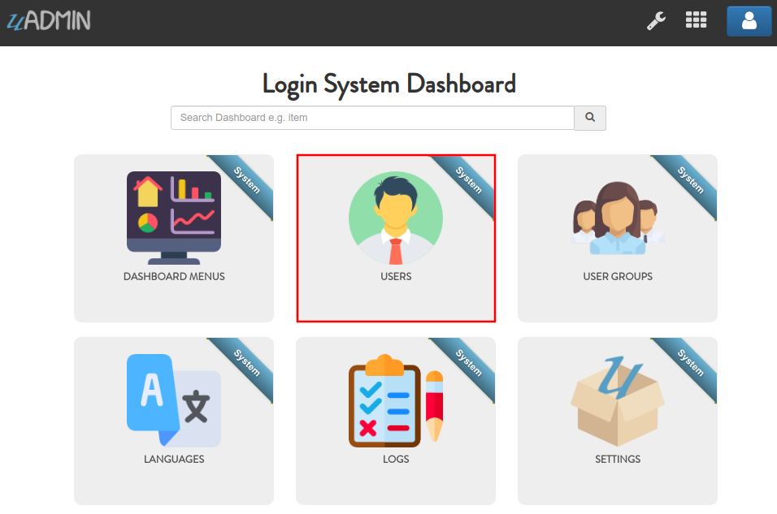
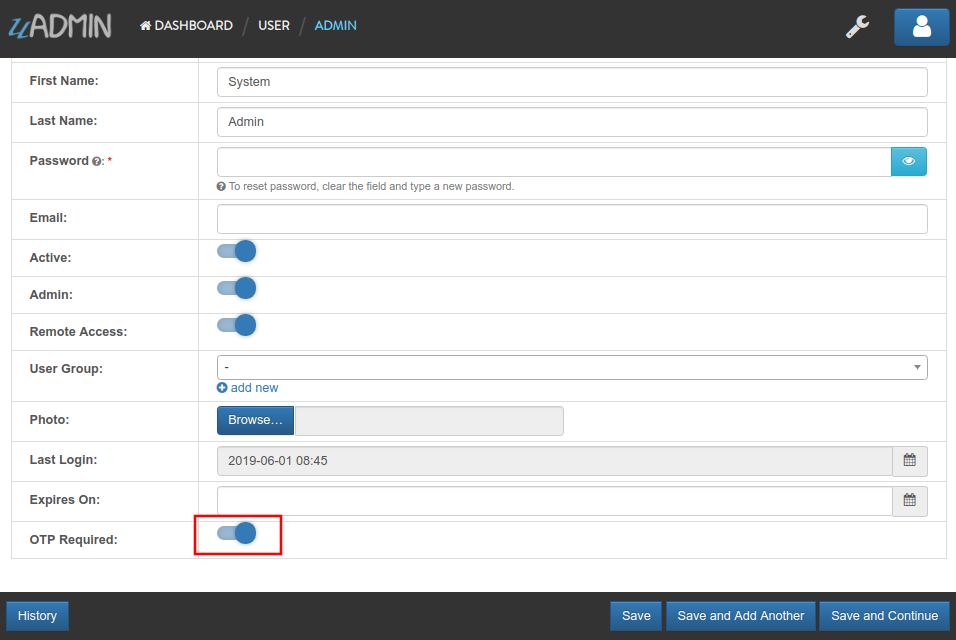
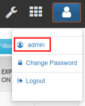

Login System Tutorial Part 4 - Login Access Debugging¶
In this tutorial, we will discuss about checking the status of the user login with and without OTP validation.
Go to login.go in handlers folder and call the login function that passes the HTTP request, username, and password. If all three parameters are valid, it will return the full name of the User and the boolean value for IsOTPRequired.
if user.ID > 0 {
password := r.FormValue("password")
// Comment otpPass for now
// otpPass := r.FormValue("otp_pass")
// ----------------------- PLACE IT HERE -----------------------
// Pass the requested username and password in Login function to
// return the full name of the User and the boolean value for
// IsOTPRequired
login, otp := uadmin.Login(r, username, password)
// Print results
uadmin.Trail(uadmin.DEBUG, "Login as: %s", login)
uadmin.Trail(uadmin.DEBUG, "OTP: %t", otp)
}
Now run your application and go to the login path in the address bar (e.g. http://0.0.0.0:8080/login/). Assign the username and password in the login form (e.g. admin, admin). Click Login button to submit.

Check your terminal for the result.
[ DEBUG ] Login as: System Admin
[ DEBUG ] OTP: false
By default, the OTPRequired for that user is disabled.
Exit your application. Go to login.go in handlers folder and call the login2fa function that passes the HTTP request, username, password, and OTP Password. If all four parameters are valid, it will return the full name of the User.
// Check if the fetched record is existing in the User model
if user.ID > 0 {
password := r.FormValue("password")
// Uncomment this part
otpPass := r.FormValue("otp_pass")
// Pass the requested username and password in Login function to
// return the full name of the User and the boolean value for
// IsOTPRequired
login, otp := uadmin.Login(r, username, password)
// ----------------------- PLACE IT HERE -----------------------
// Initialize Login2FA that returns the User
login2fa := &uadmin.User{}
// Check whether the OTP value from Login function is true
// and the OTP Password is valid
if otp == true && user.VerifyOTP(otpPass) {
// Pass the requested username, password, and OTP Password in
// Login2FA function to return the full name of the User
login2fa = uadmin.Login2FA(r, username, password, otpPass)
// Print the result
uadmin.Trail(uadmin.DEBUG, "Login with 2FA as: %s", login2fa)
}
}
Run your application and go to the admin path in the address bar (e.g. http://0.0.0.0:8080/admin/). Login using “admin” as username and password.

Click on “USERS”.
Click System Admin.

Scroll down the form then activate OTP Required on that user.
Result

Click the blue person icon on the top right corner then select admin in order to visit the profile page.
Scroll down the form. There is a 2FA image to fetch the QR code which is typically used for storing URLs or other information for reading by the camera on a smartphone. In order to do that, you can use Google Authenticator (Android, iOS). It is a software-based authenticator that implements two-step verification services using the Time-based One-time Password Algorithm and HMAC-based One-time Password algorithm, for authenticating users of mobile applications by Google. 1
If there is a problem, you may go to your terminal and check the OTP verification code for login.
Now go to the login path in the address bar (e.g. http://0.0.0.0:8080/login/). Assign the username, password, and OTP password that you fetched from the 2FA image in the login form (e.g. admin, admin, 123456). Click Login button to submit.

Check your terminal for the result.
[ DEBUG ] Login with 2FA as: System Admin
[ DEBUG ] Login as: System Admin
[ DEBUG ] OTP: true
In the next part, we will talk about getting the session key if the user login is valid and setting an HTTP cookie for the user session.
Click here to view the full source code in this part.
Reference¶
- 1
No author (28 May 2019). Google Authenticator. Retrieved from https://en.wikipedia.org/wiki/Google_Authenticator